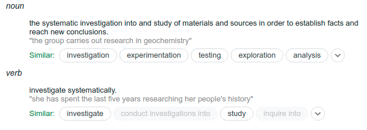

Research
Last Updated: 26th April
My research goal is to understand what intelligence means and trying to reproduce it artificially so that we can have a tool which will reduce the development process drastically in every field. I believe that to achieve this we would require a good understanding of psychology, and an intutive sense of why and how humans function.
I started my journey in the academia by focusing on Computer Vision because of its popularity and ease of applicatoin but my interests have diverged into graphs and audio as well.
I have mentioned some brief description of my publications below. To get a list of all my publications please visit here .
Iteratively Reweighted Minimax-Concave Penalty Minimization for Accurate Low-rank Plus Sparse Matrix Decomposition
Last Updated: 6th Jan 2021
Low-rank plus sparse matrix decomposition (LSD) is an important problem in computer vision and machine learning. It has been solved using convex relaxations of the matrix rank and `0-pseudo-norm, which are the nuclear norm and `1-norm, respectively. Convex approximations are known to result in biased estimates, to overcome which, nonconvex regularizers such as weighted nuclear-norm minimization and... weighted Schatten p-norm minimization have been proposed. However, works employing these regularizers have used heuristic weight-selection strategies. We propose weighted minimax-concave penalty (WMCP) as the nonconvex regularizer and show that it admits an equivalent representation that enables weight adaptation. Similarly, an equivalent representation to the weighted matrix gamma norm (WMGN) enables weight adaptation for the low-rank part. The optimization algorithms are based on the alternating direction method of multipliers technique. We show that the optimization frameworks relying on the two penalties, WMCP and WMGN, coupled with a novel iterative weight update strategy, result in accurate low-rank plus sparse matrix decomposition. The algorithms are also shown to satisfy descent properties and convergence guarantees. On the applications front, we consider the problem of foreground-background separation in video sequences. Simulation experiments and validations on standard datasets show that the proposed techniques outperform the benchmark techniques.
ChildrEN SafEty Retrieval (CENSER) System for Retrieval of Kidnapped Children from Brothels in India using the Memory Augmented ScatterNet ResNet Hybrid (MSRHN) Network
Last Updated: 6th Jan 2021
Human child trafficking has become a global epidemic with over 10 million children forced into labor or prostitution. Children kidnapped from poverty-stricken sections of India have been especially vulnerable due to the lack of initiative from law enforcement agencies to retrieve them. The facial image of the children is... generally used to retrieve and reunite the children with their families. However, the facial features of children change drastically over short periods making it hard to recognize them using these images. In addition, images of several kidnapped children is often unavailable as several families in India never took picturesof their children due to the lack of resources. This further makes it difficult to identify these children. In this paper, we propose the ChildrEN SafEty and Retrieval (CENSER) system that is being used by non-profit organizations in India to retrieve abducted children from brothels. The CENSER system encodes the input image of a child using the proposed Memory Augmented ScatterNet ResNet Hybrid (MSRHN) network and queries the encoding with the (i) Age, (ii) Kinship, and (iii) Sketch databases to establish the child’s identity. The MSRHN network is pre-trained on the KinFace database and then fine-tuned on the three databases. The network also has the capability to learn new faces of children in one-shot using the memory buffer. The performance of the proposed model is compared with several state-of-the-art methods.
AEVB-Comm: An Intelligent CommunicationSystem based on AEVBs
Last Updated: 6th Jan 2021
In recent years, applying Deep Learning (DL) techniques emerged as a common practice in the communication system, demonstrating promising results. The present paper proposes a new Convolutional Neural Network (CNN) based Variational Autoencoder (VAE) communication system. The VAE (continuous latent space) based communication systems confer unprecedented improvement in... the system performance compared to AE (distributed latent space) and other traditional methods. We have introduced an adjustable hyperparameter β−VAE in the proposed VAE, which is also known as β− VAE VAE, resulting in extremely disentangled latent space representation. Furthermore, a higher-dimensional representation of latent space is employed, reducing the Block Error Rate (BLER). The CNN based VAE architecture performs the encoding and modulation at the transmitter, whereas decoding and demodulation at the receiver. Finally, to prove that a continuous latent space-based system designated VAE performs better than the other and 4n dimensional representation is better than 2n representaion, various simulation results supporting the both has been conferred under normal and noisy conditions.
Performance Analysis of Weighted Low Rank Model with Sparse Image Histograms for Face Recognition Under Low-level Illumination and Occlusion
Last Updated: 6th Jan 2021
In a broad range of computer vision applications, the purpose of Low-rank matrix approximation (LRMA) models is to recover the underlying low-rank matrix from its degraded observation. The latest LRMA methods - Robust Principal Component Analysis (RPCA) resort to using the nuclear norm minimization (NNM) as a convex relaxation of the non -convex rank minimization. However,... NNM tends to over-shrink the rank components and treats the different rank components equally, limiting its flexibility in practical applications. We use a more flexible model, namely the Weighted Schatten p -Norm Minimization (WSNM), to generalize the NNM to the Schatten p-norm minimization with weights assigned to different singular values. The proposed WSNM not only gives a better approximation to the original low -rank assumption but also considers the importance of different rank components. In this paper, a comparison of the low-rank recovery performance of two LRMA algorithms- RPCA and WSNM is brought out on occluded human facial images. The analysis is performed on facial imag es from the Yale database and over own database , where different facial expressions, spectacles, varying illumination account for the facial occlusions. The paper also discusses the prominent trends observed from the experimental results performed through the application of these algorithms. As low-rank images sometimes might fail to capture the details of a face adequately, we further propose a novel method to use the image-histogram of the sparse images thus obtained to identify the individual in any given image. Extensive experimental results show, both qualitatively and quantitatively, that WSNM surpasses RPCA in its performance more e ffectively by removing facial occlusions, thus giving recovered low-rank images of higher PSNR and SSIM.
Jaya Algorithm Based Intelligent Color Reduction
Last Updated: 6th Jan 2021
The purpose of color quantization is to reduce colors in an image with the least parody. Clustering is a popularly used method for color quantization. Color image quantization is an essential action in several applications of computer graphics and image processing. Most of the ... quantization techniques are mainly based on data clustering algorithms. In this paper, a color reduction hybrid algorithm is proposed by applying Jaya algorithm for clustering. We examine the act of Jaya algorithm in the pre-clustering stage and K-means in the post-clustering phase, and the limitations of both the algorithms are overcome by their combination. The algorithms are compared by MSE and PSNR values of the four images. The MSE values are lower and PSNR values are higher for the proposed algorithm. The results explain that the proposed algorithm is surpassed both the K-means clustering and Jaya algorithm clustering for color reduction method.

I am a 2021 B.Tech graduate student at the National Institute of Technology,
Warangal, from Electronics and Communication Engineering. I started research in machine
learning in my freshman year of UG. My propensity to research led me to take up various
internships and research projects during my undergraduate study. I have collaborations at
the Indian Institute of Science, Bangalore; the Indian Institute of Technology, Dharwad, and
I also worked as a part-time Machine Learning Researcher at Skylark Labs LLC.
During my projects, I explored various domains of ML including non-convex
optimization, Deep Learning, Computer Vision, Deep Reinforcement Learning, and Meta learning. I'm
currently seeking positions to pursue MSc or a Ph.D.
Contact Information
Gmaild:
vamshi.hemadri@gmail.com
LinkedIn
Google
Scholar
GitHub
Orcid
Facebook
Call: +91 90004 38694